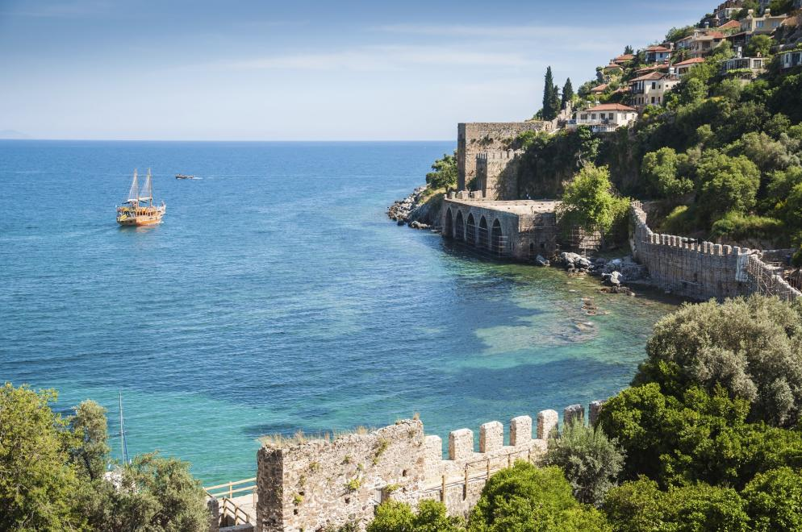

Vorname:
Nachname:
Herr
Frau
Anzahl Kinder
/>
Spanien Die Reise nach Spanien darf aufjedenfall nicht fehlen. Spanien begeistert Touristen nicht nur mit Sonnenschein, sondern auch die wunderschöne Strände, traumhaften Inseln und leckerem Essen.
Auch als Top Vergnügen gilt hier die tollen Wandergebieten und malerischen Dörfern und ganz wichtig die schöne Kultur.Nicht nur Mallorca ist in Spanien beliebt als "standard", Balearen, Kanaren, Costa Brava, Costa del Sol, Costa Blanca und Costa de la Lutz sind sehr wunderschöne Gebiete.
/>
Türkei gilt als einer der meist besuchtesten Reiseziele. Das Zentrum der türkischen ÄgÄis und ihrer antiken Bauwerke, das Mittelmeer im Süden, das Schwarze Meer im Norden und zuletzt das Marmarameer fahren viele Kreuzschiffe herum, um die schönsten ecken bekannt zu geben.
Jede einzelne Stadt in der Türkei hat verschiedene Kulturen z.B Essen oder die Denkmale mit einer sehr historischen emotinalen Hintergrund. Auch die Aussprache der verschiedenen Städten bzw. Dörfern ist unterschiedlich was die meisten auch bewundern, denn am Schwarzen Meer wird komplett anders Türkisch geredet wie z.B. in Istanbul.
Natürlich zählen auch die Volkstänze was erstaunlich spaß macht auf den Straßen oder in Festivalen zuzusehen.
/>
Griechenland! Die Geburtsstätte der Demokratie und der europäischen Kultur ist ein Sehnsuchtsort für Gäste aus aller Welt. Hier wandelt ihr als Besucher unter Olivenhainen und antiken Säulen und genießt dabei das angenehme Mittelmeerklima des Küstenstaates. Ob ihr auf dem Festland durch die atemberaubende Hauptstadt Athen streift oder die beliebtesten der über 3.000 Inseln erkundet: Das Land der Hellenen ist ein wahres Urlaubsparadies. Wer auf der Suche nach der idealen Mischung aus Erholung und Abenteuer ist, sollte die Trauminsel Zakynthos mit ihren kilometerlangen Sandstränden und den idealen Bedingungen zum Schnorcheln und Windsurfen ansteuern. Aber auch Korfu hat einzigartige Ausflugsziele. Die Inselwelt Griechenlands bietet jedoch für jeden Urlaubstyp etwas!
/> Deutschland hat so viel zu bieten, dass ihr gleich mehrere Urlaube am Stück dort verbringen und immer wieder neue spannende Ziele finden könnt. Das Spektrum reicht von der windig-frischen Ostseeküste bis an den mild-mediterranen Bodensee, wo auf der „Blumeninsel“ Mainau sogar Zitronenbäume und Palmen wachsen. Das Heimatland von Dichtern und Denkern wie Goethe, Kant und Hesse bietet nicht nur beliebte Urlaubsregionen wie den Schwarzwald, den Harz oder die Sächsische Schweiz: Auch Kulturschätze wie das Schloss Neuschwanstein oder der Kölner Dom sowie das Brandenburger Tor in den spannendsten deutschen Metropolen faszinieren die Besucher aus aller Welt.
/>
Zu den weltweit beliebtesten Urlaubszielen zählt auch Italien. Hier leben die Menschen mit der höchsten Lebenserwartung ganz Europas: Schließlich macht die italienische Küche es nicht nur zu einem ausgesprochen leckeren Reiseziel, sondern mit Zutaten wie Olivenöl, Zitronen und fangfrischem Fisch auch überaus gesund! Zudem ist der schönste Stiefel der Welt sehr sonnenreich und lädt geradezu ein, auf den fantastischen Plätzen des Landes zu sitzen und Espresso zu schlürfen. Einzigartige Monumente wie die Spanische Treppe während des Wochenendtrips nach Rom oder der Schiefe Turm von Pisa faszinieren ebenso wie die zahlreichen Ausflugsziele rund um den Gardasee.
/>
Im Südwesten Europas auf der Iberischen Halbinsel gelegen, ist das Nachbarland Spaniens einer der touristischen Höhepunkte des Kontinents. Bei rund 3.000 Sonnenstunden im Jahr könnt ihr hier in zahlreichen Naturparks unberührte Landschaften bestaunen und in den lebendigen Städten der bewegten Geschichte der Seefahrernation nachspüren. Ob auf der Blumeninsel Madeira, auf einer Mietwagen Rundreise entlang der traumhaften Küste der Algarve oder in der faszinierenden Hauptstadt Lissabon: Fast überall in Portugal findet ihr fantastische Natur und spannende Kulturschätze, die nur darauf warten, von euch entdeckt zu werden. Ein absoluter Geheimtipp ist auch eine portugiesische Inselgruppe mitten im Atlantik: Die abwechslungsreichen Azoren sind allemal eine Reise wert!
/>
Mit eindrucksvollen Städten wie Zagreb, Pula und Split sowie abwechslungsreichen Landschaften wie den Dinarischen Alpen und der malerischen Adriaküste ist Kroatien eines der absoluten Traumziele auf dem europäischen Kontinent. Hinzu kommen insgesamt 1.246 Inseln. Ob ihr die Wasserfälle im Nationalpark Krka bestaunen, die Kathedrale von Split bewundern oder an den paradiesischen Stränden der Insel Brac windsurfen wollt: Kroatien begeistert durch eine ungeheure Vielfalt an Möglichkeiten, hier seinen Urlaub zu verleben. Absoluter Höhepunkt ist ein Besuch in Dubrovnik, das aufgrund seiner Schönheit auch „Perle der Adria“ genannt wird.